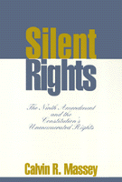

<body bgcolor="#FFFFFF" text="#000000" link="#0000FF" vlink="#CC0000" alink="#CC0000"><center><hr width="350" size="1" align="center" noshade>A pursuit of the contemporary applications of the Ninth Amendment<hr width="350" size="1" align="center" noshade><p><a href="https://cdcshoppingcart.uchicago.edu/Cart/ChicagoBook.aspx?ISBN=9781566393119&&PRESS=temple" target="_top">Buy this book!</a> | <a href="https://cdcshoppingcart.uchicago.edu/Cart/Cart.aspx?PRESS=temple" target="_top">View Cart</a> | <a href="https://cdcshoppingcart.uchicago.edu/Cart/Cart.aspx?PRESS=temple" target="_top">Check Out</a></p><p></p></center><!--none//--><h1>Silent Rights</h1>
<H2>The Ninth Amendment and the Constitution's Unenumerated Rights</H2>
<h3>Calvin R. Massey</h3>
<P>cloth 1-56639-311-6 $69.95, Jul 95, <FONT COLOR=#990033>Out of Stock Unavailable</FONT>
<br>paper 1-56639-312-4 $35.95, May 95, <FONT COLOR=#990033>Available</FONT>
<BR> 288 pp
5.5x8.25
</P><P>The right to be presumed innocence; the right to privacy; the right to equal protection under the law; the right to travel, marry, or have children and the right of a woman to terminate her pregnancy&#151these are a few of the many constitutional rights never mentioned explicitly in the Constitution. Such rights can be, but often aren't, supported by invoking the Ninth Amendment. Because of its open-endedness, the Ninth Amendment is still mired in an ill-fated perception as a constitutional nonentity and a legislative tradition that ignores its potential.
<p>As an antidote to this entrenched tradition, Calvin R. Massey presents
a comprehensive and sensible account of how the Ninth Amendment could be,
and has been, used to secure and preserve individual rights. For example,
in a recent ruling the Supreme Court held that the right to terminate pregnancy was protected by the due process clause; in doing so, it cited the Ninth Amendment. By looking at such decisions and at its various interpretations in the literature, Massey explores the Ninth Amendment's
original meaning and function, and the intention of its authors to prevent the creation of implied powers in the federal government and ensure that the bill of rights not become an exhaustive list of human rights.
<p>Massey presents a new method for recognizing implied constitutional rights and the possible contemporary role of the Ninth Amendment in constitutional law&#151a formula in which state constitutions would assume a larger role in fashioning unenumerated rights and the Supreme Court's voice would be less final.
<BR>&nbsp;<h2>Contents</h2><P>
<p>Preface
<p><b>Part I: The Contemporary Problem</b>
<br>1. The Symbolic Constitution
<p><b>Part II: The Original Meaning of the Ninth Amendment</b>
<br>2. The Political Context of the Founding Generation
<br>3. Dual Paths to a Single End
<p><b>Part III: Principled Preferences: Determining Ninth Amendment Rights</b>
<br>4. Constitutional Cy Pres
<br>5. Positive Law Component
<br>6. The Natural Law Component
<br>7. Stewards of the Constitution
<p>Notes
<br>Index
</P><BR>&nbsp;<H2>About the Author(s)</H2>
<table><tr><td valign="top"><img src="/tempress/authors/971_au.gif" height="90" width="75"></td><td width="100%" valign="middle"><p><b>Calvin R. Massey</b> is Professor of Law at Hastings College of the Law, University of California, San Francisco, and the co-author of <i>The California State Constitution</i>.</P></td></tr></table>
<BR><H2>Subject Categories</H2>
<p><A HREF="/tempress/law.html" TARGET="_top">Law and Criminology</a>
<BR><A HREF="/tempress/political.html" TARGET="_top">Political Science and Public Policy</a>
</p>
<p align="center"><a href="https://cdcshoppingcart.uchicago.edu/Cart/ChicagoBook.aspx?ISBN=9781566393119&&PRESS=temple" target="_top">Buy this book!</a> | <a href="https://cdcshoppingcart.uchicago.edu/Cart/Cart.aspx?PRESS=temple" target="_top">View Cart</a> | <a href="https://cdcshoppingcart.uchicago.edu/Cart/Cart.aspx?PRESS=temple" target="_top">Check Out</a></p><p><font face="Arial" size="1"><a href="copyright.html" onMouseOver="window.status='Web Copyright Policy';return true;" onMouseOut="window.status=''" title="Web Copyright Policy">&copy;</a> 2015 <a href="http://www.temple.edu" target="new" onMouseOver="window.status='Link to Temple University home page';return true;" onMouseOut="window.status=''" title="Link to Temple University home page">Temple University</a>. All Rights Reserved. http://www.temple.edu/tempress/titles/971_reg.html</font></p>